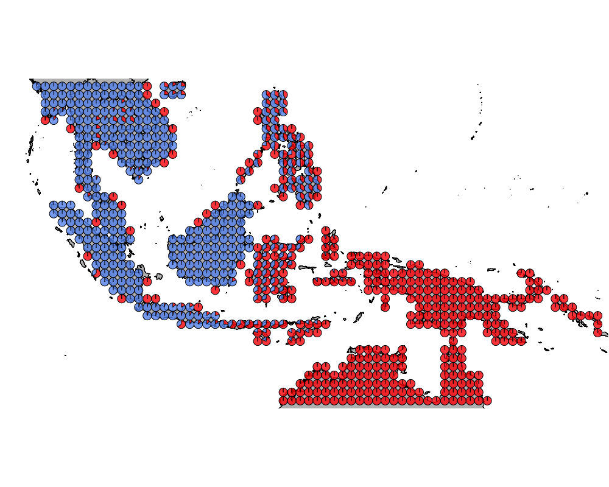
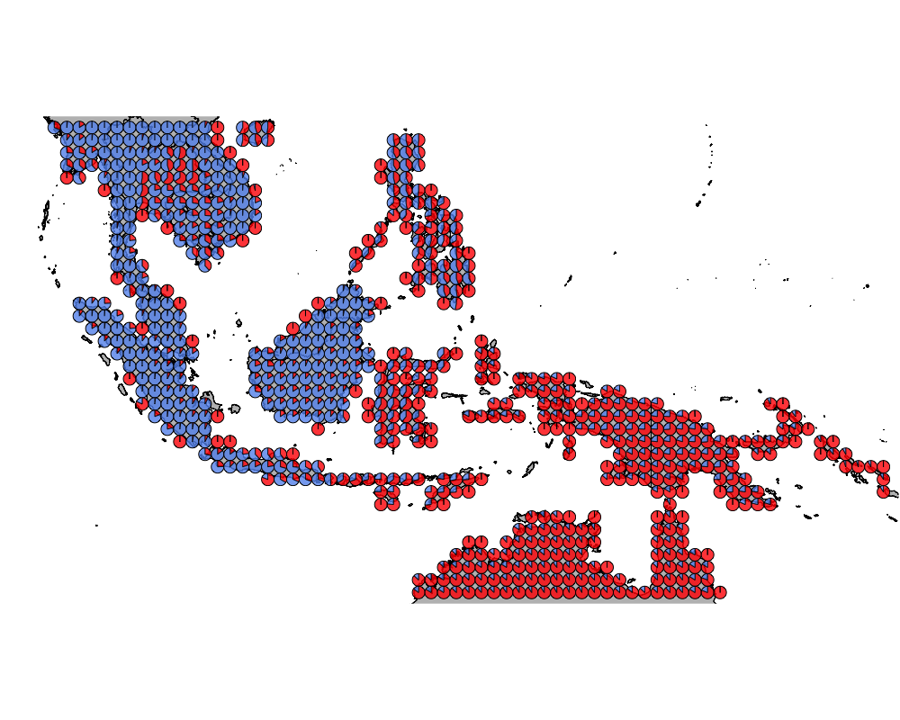
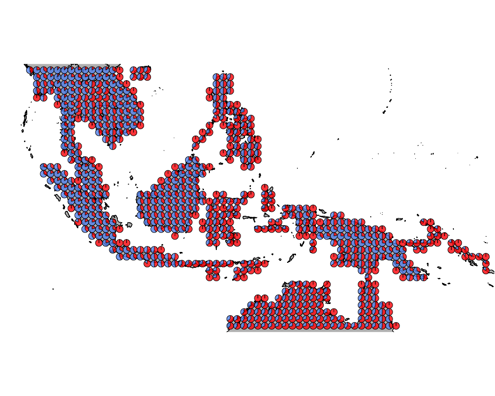
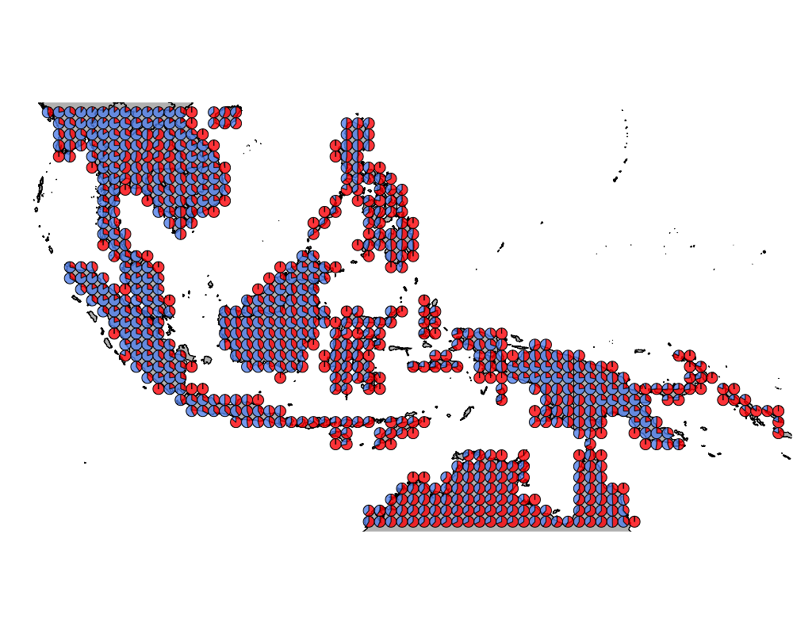

Phylogenetic analysis of Wallacea bird species - no seabirds
Kushal K Dey
3/27/2018
We look at phylogenetic analyses of the bird species in Wallacea.
library(ape)
MyTree <- read.tree("../data/wallaces_line_trees_mean_no_seabirds.nwk")datalist <- get(load("../data/wallace_region_pres_ab_breeding_no_seabirds.rda"))
latlong <- datalist$loc
data <- datalist$datnames_phylogeny_match <- read.csv("../data/names_matched_to_phylogeny.csv",
header = TRUE, row.names = 1)
tip_labels <- MyTree$tip.label
tip_labels <- gsub("_", " ", tip_labels)
common_names <- intersect(colnames(data), names_phylogeny_match[,1])
data2 <- data[, match(common_names, colnames(data))]
new_names <- names_phylogeny_match[match(colnames(data2), names_phylogeny_match[,1]),2]
colnames(data2) <- new_names
idx2 <- match(tip_labels, as.character(names_phylogeny_match[,2]))
newTree <- MyTree
newTree$tip.label <- tip_labelssource("../code/collapse_counts_by_phylo.R")
sliced_data_cutoffs <- list()
k <- 1
for(cut in c(5, 10, 15, 20, 30, 40, 50, 60, 70, 75, 80)){
sliced_data_cutoffs[[k]] <- collapse_counts_by_phylo(data2, newTree, collapse_at = cut)
k = k + 1
}
save(sliced_data_cutoffs, file = "../output/sliced_data_cutoffs.rda")cuts <- c(5, 10, 15, 20, 30, 40, 50, 60, 70, 75, 80)
topic_clust <- list()
for(k in 1:length(cuts)){
num_groups_mat <- t(sliced_data_cutoffs[[k]]$num_groups %*% t(rep(1, dim(data2)[1])))
meth <- sliced_data_cutoffs[[k]]$outdat
unmeth <- num_groups_mat - meth
topic_clust[[k]] <- meth_topics(meth, unmeth, K=2, tol = 0.1, use_squarem = FALSE)
}##
## Estimating on a 703 samples collection.
## log posterior increase: 63596.1, 164.9, 2.3, 292.4, 160, 6.2, 54.2, 191.4, 1.1, 16.2, 3.3, 1.3, 1, 0.4, 0.1, done.
##
## Estimating on a 703 samples collection.
## log posterior increase: 189601.6, 2083, 1636.5, 202.4, 18.1, 0.4, 0.2, 0.2, 0.1, done.
##
## Estimating on a 703 samples collection.
## log posterior increase: 22900.5, 130.9, 3.8, 0.8, 0.4, done.
##
## Estimating on a 703 samples collection.
## log posterior increase: 27572.7, 152.1, 4.4, 0.3, 0.4, done.
##
## Estimating on a 703 samples collection.
## log posterior increase: 66050.5, 560.7, 240.3, 104.4, 50.4, 29.7, 32.7, 213.5, 594.9, 154.3, 112.6, 405.2, 151.4, 328.8, 142.6, 153.4, 42.9, 16.9, 104.4, 62.4, 23.6, 53.2, 26.3, 0.7, 9.6, 0.4, 7.7, 7, 5.8, 10.5, 0.5, 0.4, 1.2, 3.5, 7, 3.9, 0.5, done.
##
## Estimating on a 703 samples collection.
## log posterior increase: 183862.9, 125.3, 44.7, 25.7, 18.9, 15, 8.8, 7.5, 7.3, 7.8, 9, 10.4, 11.9, 13.1, 13.8, 14.2, 14.7, 16.1, 20.6, 29.3, 30.5, 36.4, 35.3, 19.6, 14.1, 23.4, 28.9, 23.9, 37.9, 39.9, 41.6, 77.2, 167.1, 214.5, 145.1, 126.1, 111.3, 9.4, 3.2, 256.8, 1.1, 22.5, 8.7, 4.3, 2.1, 6.2, 2.2, done.
##
## Estimating on a 703 samples collection.
## log posterior increase: 21105.6, 250.6, 46.1, 3.5, 0.3, done.
##
## Estimating on a 703 samples collection.
## log posterior increase: 6452.1, 306.5, 334.7, 130.5, 53.2, 25.5, 18.9, 16, 8.3, 4.5, 2.8, 1.9, 1.4, 1, 0.8, 0.6, 0.5, 0.4, 0.3, 0.2, 0.2, 0.2, 0.1, 0.1, done.
##
## Estimating on a 703 samples collection.
## log posterior increase: 6230.5, 266.3, 127.6, 65.2, 35.2, 21.4, 14.2, 10, 7.4, 4.5, 3.6, 2.9, 2.4, 2, 1.7, 1.5, 1.3, 1.1, 1, 0.9, 0.8, 0.7, 0.6, 0.5, 0.5, 0.4, 0.4, 0.4, 0.3, 0.3, 0.3, 0.2, 0.2, 0.2, 0.2, 0.2, 0.2, 0.2, 0.1, 0.1, 0.1, 0.1, 0.1, 0.1, 0.1, 0.1, 0.1, 0.1, 0.1, 0.1, 0.1, 0.1, 0.1, 0.1, 0.1, 0.1, 0.1, 0.2, 0.2, 0.2, 0.2, 0.2, 0.2, 0.2, 0.2, 0.2, 0.2, 0.2, 0.2, 0.2, 0.2, 0.2, 0.2, 0.2, 0.2, 0.2, 0.2, 0.2, 0.2, 0.2, 0.2, 0.2, 0.2, 0.2, 0.2, 0.2, 0.2, 0.1, 0.1, 0.1, 0.1, 0.1, 0.1, 0.1, 0.1, 0.1, 0.1, 0.1, 0.1, 0.1, 0.1, 0.1, 0.1, 0.1, 0.1, 0.1, 0.1, 0.1, 0.1, 0.1, 0.1, 0.1, 0.1, 0.1, 0.1, 0.1, 0.1, 0.1, 0.1, 0.1, 0.1, 0.1, 0.1, 0.1, 0.1, 0.1, 0.1, done.
##
## Estimating on a 703 samples collection.
## log posterior increase: 8780.6, 139.3, 81.8, 19.5, 8.2, 6.2, 10.9, 4.1, 1.7, 1, 0.7, 0.5, 0.4, 0.3, 0.3, 0.2, 0.2, 0.2, 0.2, 0.1, 0.1, 0.1, 0.1, done.
##
## Estimating on a 703 samples collection.
## log posterior increase: 10405.6, 190.1, 715.1, 315.1, 147.9, 73.8, 38.4, 21.7, 17.7, 8.1, 5.3, 3, 2.1, 1.5, 1.1, 0.8, 0.6, 0.5, 0.5, 0.4, 0.4, 0.3, 0.3, 0.3, 0.3, 0.3, 0.3, 0.3, 0.2, 0.2, 0.2, 0.2, 0.2, 0.2, 0.2, 0.2, 0.2, 0.2, 0.2, 0.2, 0.2, 0.2, 0.2, 0.2, 0.2, 0.2, 0.2, 0.2, 0.2, 0.2, 0.2, 0.2, 0.2, 0.2, 0.2, 0.2, 0.2, 0.2, 0.2, 0.2, 0.2, 0.2, 0.2, 0.2, 0.2, 0.2, 0.2, 0.2, 0.2, 0.2, 0.2, 0.2, 0.2, 0.2, 0.2, 0.2, 0.2, 0.2, 0.2, 0.2, 0.2, 0.2, 0.2, 0.2, 0.2, 0.2, 0.2, 0.2, 0.2, 0.2, 0.2, 0.2, 0.1, 0.1, 0.1, 0.1, 0.1, 0.1, 0.1, 0.1, 0.1, 0.1, 0.1, 0.1, 0.1, 0.1, 0.1, 0.1, 0.1, 0.1, 0.1, 0.1, 0.1, 0.1, 0.1, 0.1, 0.1, 0.1, 0.1, 0.1, 0.1, 0.1, 0.1, done.save(topic_clust, file = "../output/phylogenetic_wallacea_methClust.rda")color = c("red", "cornflowerblue", "cyan", "brown4", "burlywood", "darkgoldenrod1",
"azure4", "green","deepskyblue","yellow", "azure1")
intensity <- 0.8
for(k in 1:length(cuts)){
png(filename=paste0("../docs/phylogenetic_wallacea/cutoff_", cuts[k], ".png"),width = 1000, height = 800)
map("worldHires",
ylim=c(-18,20), xlim=c(90,160), # Re-defines the latitude and longitude range
col = "gray", fill=TRUE, mar=c(0.1,0.1,0.1,0.1))
lapply(1:dim(topic_clust[[k]]$omega)[1], function(r)
add.pie(z=as.integer(100*topic_clust[[k]]$omega[r,]),
x=latlong[r,1], y=latlong[r,2], labels=c("","",""),
radius = 0.5,
col=c(alpha(color[1],intensity),alpha(color[2],intensity),
alpha(color[3], intensity), alpha(color[4], intensity),
alpha(color[5], intensity), alpha(color[6], intensity),
alpha(color[7], intensity), alpha(color[8], intensity),
alpha(color[9], intensity), alpha(color[10], intensity),
alpha(color[11], intensity))));
dev.off()
}cut-off = 5

cutoff1
cut-off = 10

cutoff2
cut-off = 15

cutoff3
cut-off = 20
cutoff4
cut-off = 30
cutoff5
cut-off = 40
cutoff6
cut-off = 50

cutoff7
cut-off = 60

cutoff8
cut-off = 70
cutoff9
cut-off = 75
cutoff10
cut-off = 80

cutoff11
This R Markdown site was created with workflowr